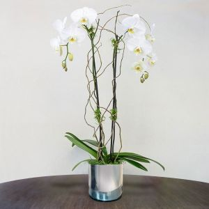
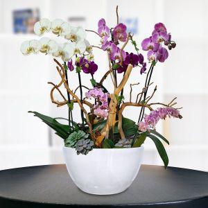

¡Bienvenidos a Blooson's!Donde aprenderas el cuidado de Orquideas |
|
¡Hola, Jardinero o aficionado a las plantas! |
|
Si estas por aqui lo mas seguro es que tengas un problema con una plata o simplemente necesites ayuda para cuidar a una. Bueno no tienes que preocuparte porque aqui en Blooson's te ayudaremos con los mejores tip de cuidado para que tu planta se mantenga saludable y feliz!, adentrate a conocer los diferentes tipos de cuidados y datos que tenemos a nuestra disposicion, sin mas disfruta de nuestro blog |
Cuidado de las orquídeas
Cómo cuidar orquídeas Phalaenopsis Las orquídeas Phalaenopsis destacan por sus flores elegantes y duraderas. Las orquídeas Phalaenopsis, también conocidas como “orquídeas mariposa”, son unas de las plantas de interior más populares gracias a sus flores elegantes y duraderas. Con los cuidados adecuados, pueden florecer varias veces al año y convertirse en el centro de atención de cualquier espacio. En Flores.Guru te compartimos consejos prácticos para mantenerlas saludables y hermosas. |
La Phalaenopsis necesita luz brillante pero indirecta. Evita el sol directo, ya que puede quemar sus hojas. Un lugar ideal es cerca de una ventana orientada al este o al sur con una cortina ligera. El riego es clave. Riégala una vez por semana en invierno y hasta dos veces en verano, dependiendo de la humedad ambiental. Asegúrate de que el agua drene bien, ya que las raíces no deben permanecer encharcadas. La Phalaenopsis disfruta de ambientes húmedos. Puedes colocar un plato con agua y piedras bajo la maceta (sin que toque las raíces) o agrupar varias plantas para generar microclima. Durante la época de crecimiento (primavera y verano), fertiliza cada 15 días con un abono balanceado para orquídeas diluido a la mitad de la dosis recomendada. Es recomendable trasplantar la orquídea cada 2 o 3 años, cuando el sustrato se degrade. Usa corteza de pino especial para orquídeas y una maceta transparente que permita observar las raíces. Cuando la vara floral termine de florecer, puedes cortarla justo por encima del tercer nudo para estimular una nueva floración, o cortarla desde la base para que la planta descanse y tome fuerza para el siguiente ciclo. |

Las raíces de la Phalaenopsis deben mantenerse aireadas y nunca encharcadas.
ConclusionCuidar de una orquídea Phalaenopsis no es complicado: con la luz adecuada, riego moderado y un poco de atención, estas plantas pueden florecer varias veces al año y llenar tu hogar de elegancia. Si buscas una opción lista para regalar o disfrutar |
Referencias |
Página de Referencia de donde saqué las cosas |
Video
Marlene Gudalupe Ortega Godoy